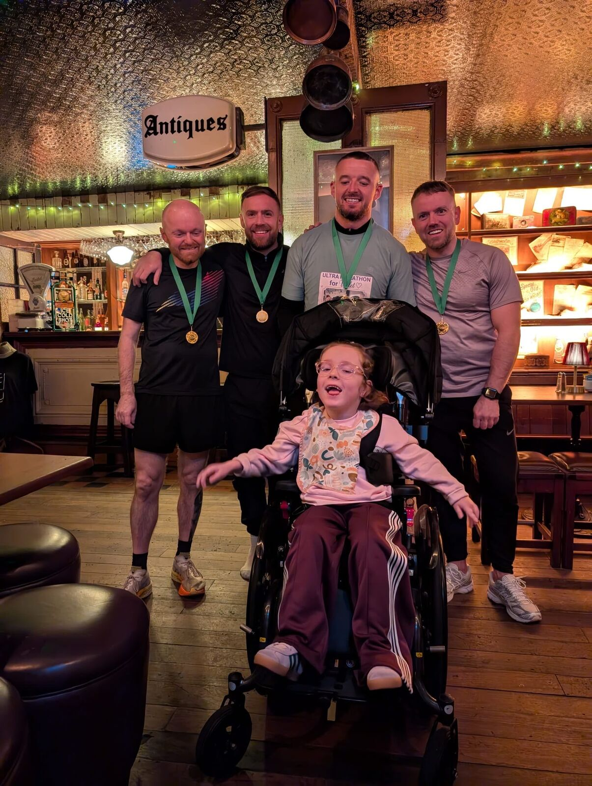
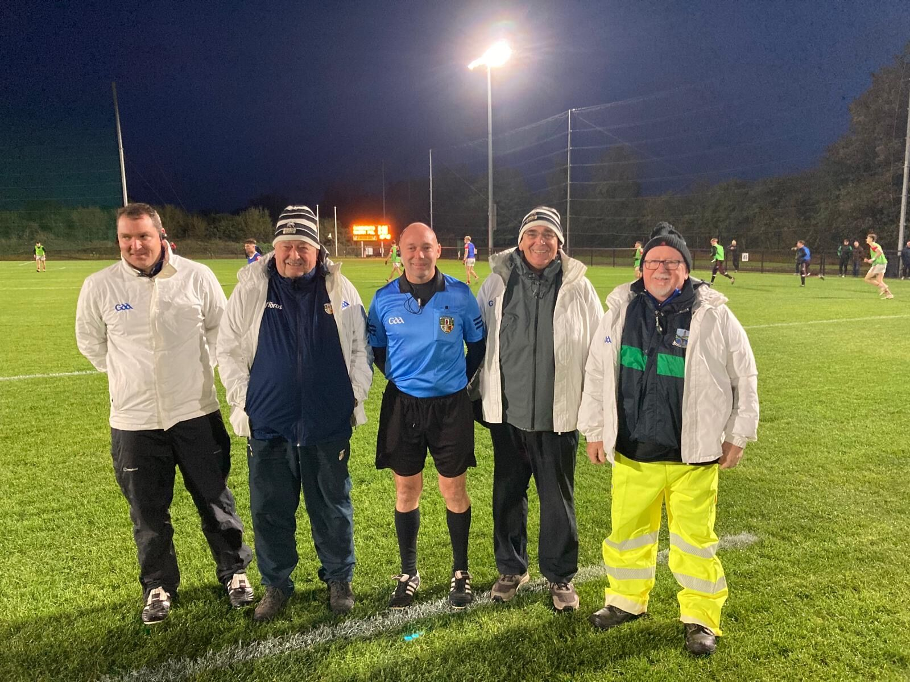

A week of outstanding achievements, a brilliant fundraising challenge and an important update for Halloween week.

Gerard Haughey, second from the left, with fellow runners after completing the 50km Belfast-to-Newcastle challenge.
Gerard Completes an Incredible 50km Challenge
Massive congratulations to our U12 girls’ coach and all-round club legend Gerard Haughey, who completed an incredible 50km run from Belfast to Newcastle in support of cerebral palsy.
Completing such a demanding challenge would be a remarkable achievement in any conditions, but doing it in the inclement weather made Gerard’s effort even more special.
Everyone at St Agnes is enormously proud of you, Gerard. A huge achievement for a wonderful cause. 🖤🤍

From left: Sean Barker, Roy McLarnon, Declan McLarnon, Ciaran Mulgrew and Pearse McGovern proudly representing the Aggies at the Minor Final.
Declan Takes Charge of the All-County Minor A Final
Big congratulations to Declan McLarnon, who refereed the All-County Minor A Football Final between Portglenone and St Paul’s.
A huge thank you also to his excellent team of Sean Barker, Ciaran Mulgrew, Pearse McGovern and Roy McLarnon, who supported Declan as his umpires and proudly wore the white coats.
Aggies legends all round!
Thank You, Kevin Grieve
Massive congratulations to Kevin Grieve as he finishes his role coaching Gaelic games at Holy Child Primary School after nine fantastic years.
Kevin was presented with a token of appreciation from the children in recognition of the time, enthusiasm and encouragement he has given to generations of young players.
Kevin has done St Agnes proud and helped create a valuable connection between our local school and our club. We look forward to seeing that important link continue and thrive in the years ahead.
Holy Child and Aggies Abú! 🖤🤍
Dylan Greive Takes on a 300km Challenge
Our senior hurler Dylan Greive is running an incredible 300km from 1 October to Christmas to raise funds and awareness for mental health and suicide prevention.
Last year, Dylan ran 100km in November. Club members kindly donated and even joined him for some of the runs, support he greatly appreciated. We’re proud to see him take on this even bigger challenge for such an important cause.
If you would like to support Dylan, you can donate through his JustGiving page:
Good luck, Dylan — the whole club is behind you! ⚫⚪🔵🟡
U12 Girls’ Winter League Continues
Our U12 girls are back in action at Woodlands on Monday evening. Niamh will confirm the match time directly with the team.
Best of luck to the girls and coaches.
26 October–1 November 2026
Halloween Week Ahead
The U12 girls have a match on Monday, while U14 and U16 boys training is the only club training session going ahead this week. All other training is off for the Halloween break.
Monday 26 October
U12 Girls Match
Woodlands · Time to be confirmed by Niamh
Thursday 29 October
U14 & U16 Boys Training
6:00–7:00pm · Woodlands 4G
Halloween Break
All Other Training Is Off
There will be no other club training sessions this week, including no juvenile training on Friday 30 October.
Have a safe and enjoyable Halloween from everyone at St Agnes GAC.